Zur Startseite
Zur Navigation springen
Zum Inhalt springen
Login / Lernen
Registrieren
Shop
Warenkorb
Über quowadis
Über das quowadis-Team
Häufig Gefragt (FAQ)
Impressum
quowadis-blog
AGB und Nutzungsbedingungen
Datenschutz
quowadis Krimi
Die Anatomie der Sache
EuerFeedback
Bodybit
Start
Muskeltabellen
Klinikbezug
IMPP-relevant
Body Bits
Glanzlichter
Lernatlas
Kapitel 1
Kapitel 2
Kapitel 3
Kapitel 4
Kapitel 5
Kopf
Hirnnerven
Gesichtsregion
Leitungsbahnen
Organsteckbriefe
Prüfung
Lernempfehlungen
gefundene Suchergebnisse
schliessen
Kapitel 5
Kopf >
Entwicklung
Regionen und Entwicklung
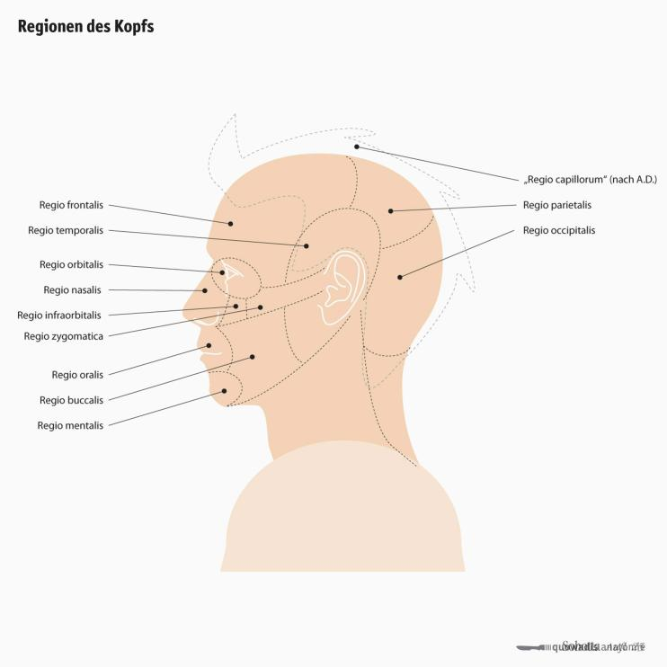
Regionen des Kopfs
Kopfskelett:
Neurocranium und Splanchocranium
Verknöcherung des Kopfskeletts
Das Splanchnocranium:
6 Schlundbögen
6 Schlundbögen:
Bau und Derivate (1)
6 Schlundbögen:
Bau und Derivate (2)
Derivate der Schlundtaschen und Schlundfurchen
Klinik:
Halszysten und -fisteln
Entwicklung des Gesichts:
1. Schlundbogen (5.-8. Woche)
Entwicklung des Gaumens
Klinik:
Spaltbildung
Kopf >
Schädel
Schädel:
Suturen und Fontanellen
Fontanellen
Suturen
Klinik:
Kraniosynostosen
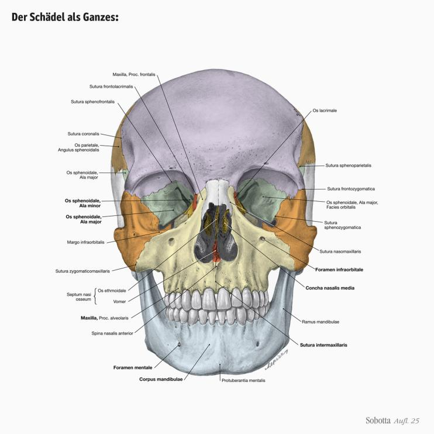
Der Schädel als Ganzes:
Stirn
Der Schädel als Ganzes:
seitliche Schädelwand (1)
Der Schädel als Ganzes:
seitliche Schädelwand (2)
Schädelbasis von innen (1)
Schädelbasis von innen (2)
Schädelbasis von außen (1)
Schädelbasis von außen (2)
Schädelöffnungen
Knochenpfeiler und -balken
Klinik:
Gesichtsfrakturen nach LE FORT
Kopf >
Mimische Muskulatur
Mimische Muskulatur
Mimische Muskulatur (2) und Kopfschwarte
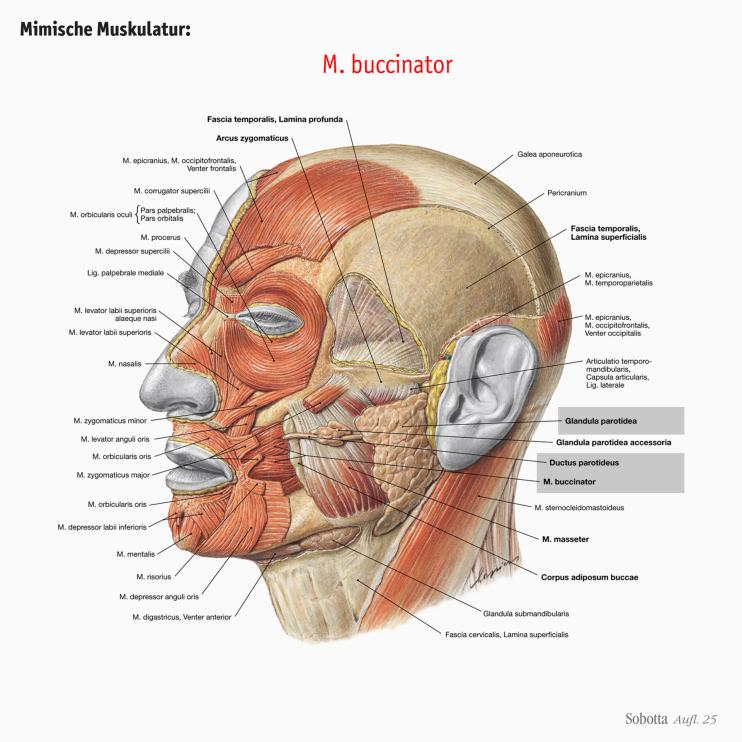
Mimische Muskulatur:
M. buccinator und Faszien im Gesicht
Motorische Innervation des Gesichts:
N. facialis
Klinik:
Läsion des N. facialis
Kopf >
Kauapparat
Kauapparat
Kiefergelenk:
Gelenkkopf
Bau des Discus articularis
Bänder des Kiefergelenks (1)
Bänder des Kiefergelenks (2)
Bänder des Kiefergelenks (3)
Bewegungen des Kiefergelenks:
Scharniergelenk mit beweglicher Pfanne
Kaumuskulatur
Kaumuskulatur:
M. temporalis und M. masseter
Kaumuskulatur:
M. temporalis
Kaumuskulatur:
M. pterygoideus medialis und lateralis
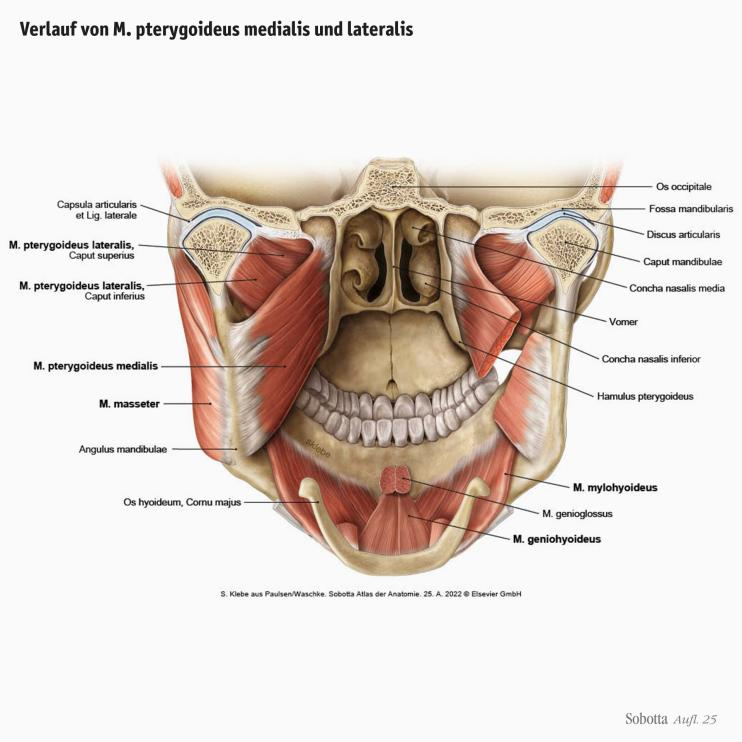
Verlauf von M. pterygoideus medialis und lateralis
Kieferöffnung
Kopf >
Mundhöhle
Mundhöhle
Mundhöhle (Cavitas oris) (2)
Gaumen (Palatum)
Gaumen (Palatum) und Schlundenge (Isthmus faucium)
Muskeln des Gaumens (1)
Innervation der Gaumenmuskulatur
Muskeln des Gaumens (2)
Mechanismus der Tubenerweiterung
Muskeln des Gaumens (3)
Gaumenbögen und Tonsillarbucht
Leitungsbahnen der Gaumenmandel (Tonsilla palatina)
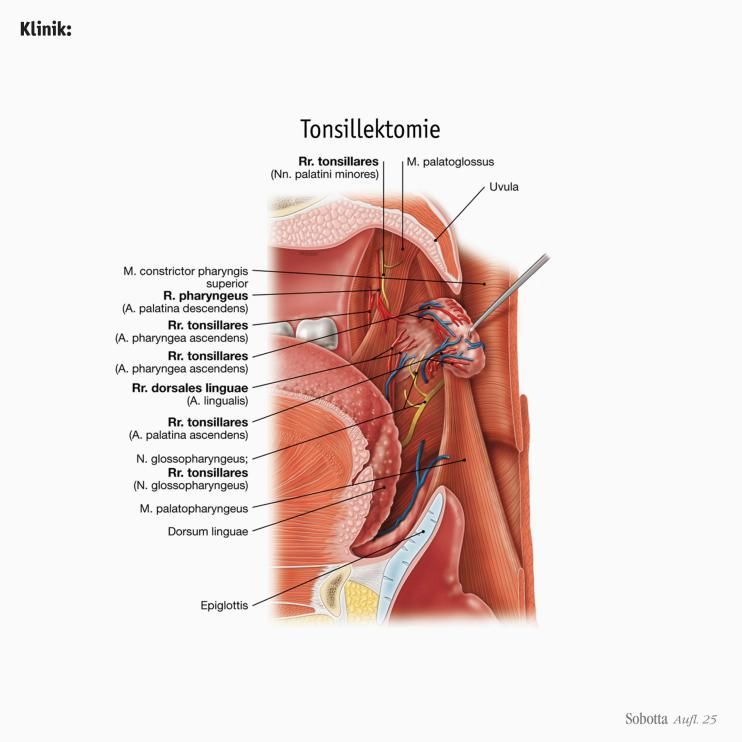
Klinik:
Tonsillektomie
Mundboden (Schleimhaut)
Mundbodenmuskulatur (suprahyale Muskulatur) (1)
Mundbodenmuskulatur (suprahyale Muskulatur) (2)
Mundbodenmuskulatur (suprahyale Muskulatur) (3)
Mundbodenmuskulatur (suprahyale Muskulatur) (4)
Mundbodenmuskulatur (suprahyale Muskulatur) (5)
Zähne (dentes) (1)
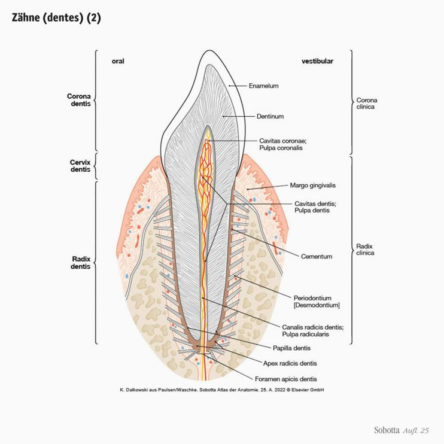
Zähne (dentes) (2)
Zähne (dentes) (3)
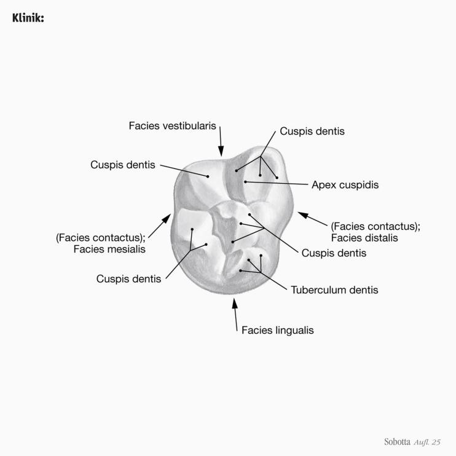
Klinik:
Zähne (dentes)
Zahnformel
Zahnwechsel
Zähne im Kiefer
Gefäßversorgung der Zähne
Innervation der Zähne
Klinik:
Leitungsanästhesie der Zähne
Zunge
Zunge:
Entwicklung
Zunge:
Aufbau
Zunge:
Binnenmuskulatur
Zunge:
Außenmuskulatur
Zungenpapillen (Papillae linguales) (1)
Zunge:
Innervation (1)
Zunge:
Innervation (2)
Geschmacksbahn (1)
Geschmacksbahn (2)
Zunge:
Leitungsbahnen
Kopf >
Speicheldrüsen
Speicheldrüsen (1)
Speicheldrüsen (2)
Glandula parotidea (Parotis) (1)
Ausführungsgang der Glandula parotidea (Ductus parotideus)
Glandula parotidea (Parotis) (2)
Parotis-Loge (=Inhalt der Fascia parotidea)
Klinik:
Mumps (Parotitis epidemica)
Parotis:
Leitungsbahnen
Glandula submandibularis
Glandula sublingualis
Ausführungsgänge der Gl. submandibularis und sublingualis (1)
Ausführungsgänge der Gl. submandibularis und sublingualis (2)
Gl. submandibularis und sublingualis:
Leitungsbahnen
Speicheldrüsen:
Parasympathische Innervation
Kopf >
Nase
Nase
Nasenscheidewand (septum nasi)
Nasenhöhle (Cavitas nasi):
Begrenzungen
Nasenhöhle (Cavitas nasi):
Gliederung
Corpus cavernosus conchae
Nasenhöhle und Nasennebenhöhlen
Leitungsbahnen
Nasenhöhle:
Innervation
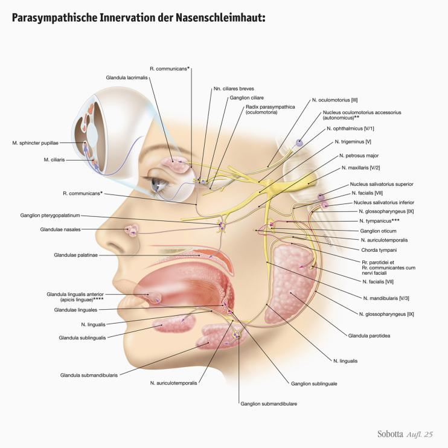
Nasenschleimhaut:
Parasympathische Innervation
Riechbahn (1)
Riechbahn (2)
Nasennebenhöhle (Sinus paranasales)
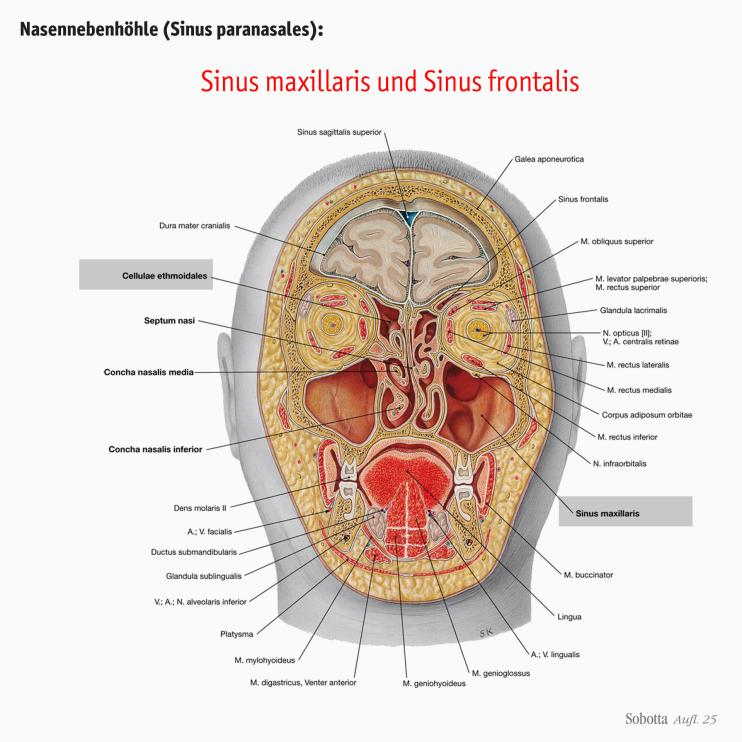
Nasennebenhöhle (Sinus paranasales):
Sinus maxillaris und Cellulae ethmoidales
Sinus sphenoidalis und Sinus frontalis
Klinik:
Nasennebenhöhlen (Sinus paranasales)
Klinik:
Nasennebenhöhlen (Sinus paranasales) (2)
Nasennebenhöhlen (Sinus paranasales):
Öffnungen
Kopf >
Auge
Auge
Entwicklung des Auges
Augenhöhle (Orbita):
von 7 Knochen begrenzt!
Augenlider (Palpebrae) und Bindehaut (Conjunctiva)
Muskeln des Augenlids:
M. orbicularis oculi
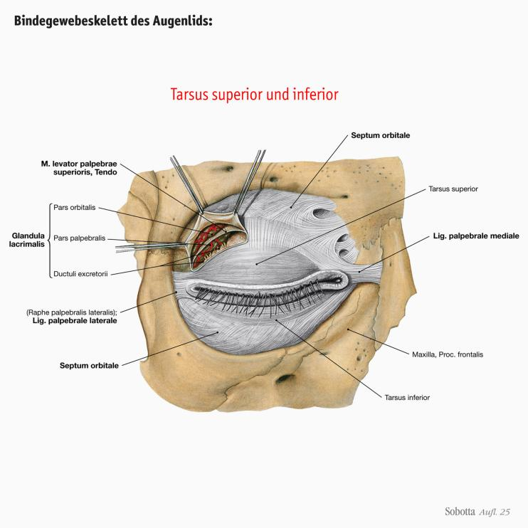
Bindegewebeskelett des Augenlids:
Tarsus superior und inferior
Lider:
Leitungsbahnen
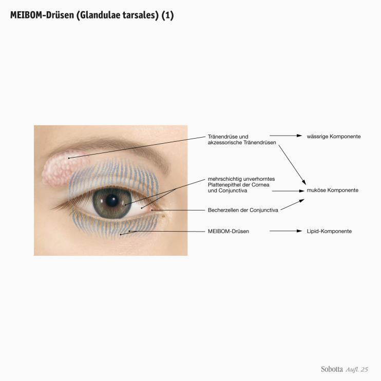
MEIBOM-Drüsen (Glandulae tarsales) (1)
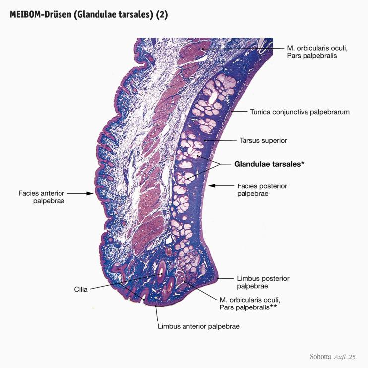
MEIBOM-Drüsen (Glandulae tarsales) (2)
MEIBOM-Drüsen (Glandulae tarsales) (3)
Der Tränenapparat
Die Tränendrüse (Glandula lacrimalis)
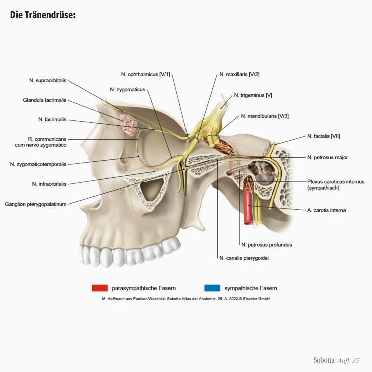
Die Tränendrüse:
Innervation
Die Tränendrüse:
vegetative Innervation
Klinik:
Test der Tränendrüse
Ableitende Tränenwege (1)
Ableitende Tränenwege (2)
Ableitende Tränenwege (3)
Ableitende Tränenwege (4)
Ableitende Tränenwege (5)
Äußere Augenmuskeln (1)
Äußere Augenmuskeln (2)
Äußere Augenmuskeln (3)
Äußere Augenmuskeln (4)
Äußere Augenmuskeln:
Funktion (1)
Äußere Augenmuskeln:
Funktion (2)
Arterien der Orbita:
A. ophthalmica (1)
Arterien der Orbita:
A. ophthalmica (2)
Venen der Orbita:
V. ophthalmica superior und inferior
Orbita:
Durchtrittsöffnungen
Orbita:
Topographie
Klinik:
M. BASEDOW
Klinik:
Lagebeziehungen der Orbita
Augapfel (Bulbus oculi)
Augapfel (Bulbus oculi):
Blutgefäße
Augenhintergrund
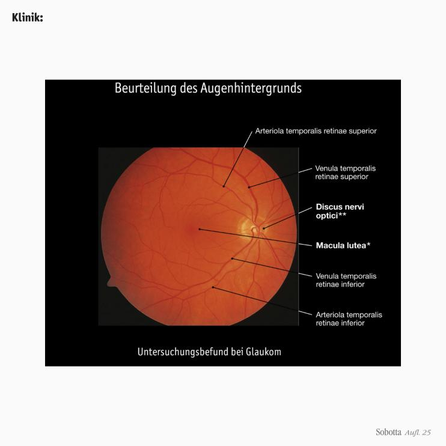
Klinik:
Beurteilung des Augenhintergrunds
Innere Augenmuskeln
M. ciliaris und Akkomodation
Sehbahn
N. opticus (Sehnerv)
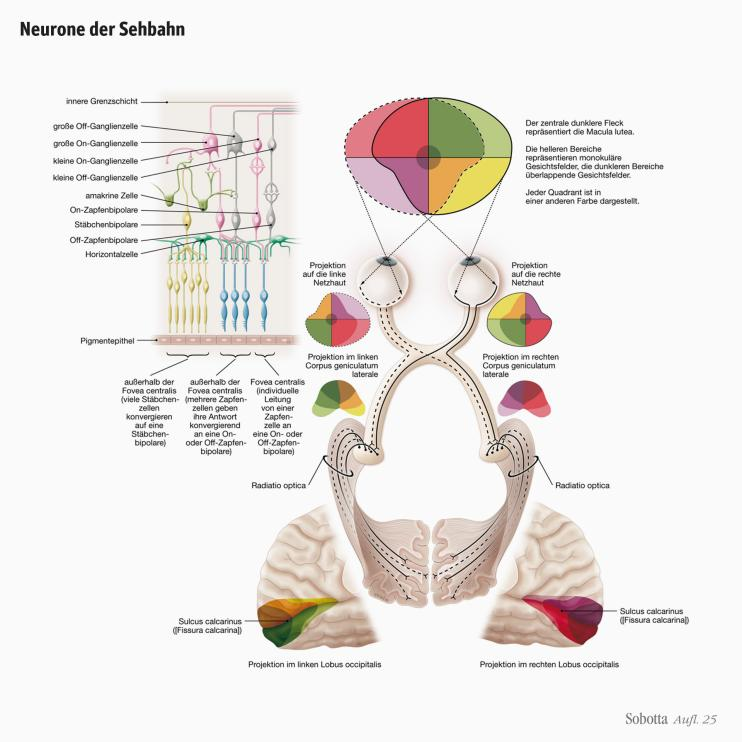
Neurone der Sehbahn
Klinik:
Läsionen der Sehbahn
Visuelle Reflexe
Kopf >
Ohr
Ohr
Ohr:
Entwicklung
Ohrmuschel (Auricula)
Ohrmuschel (Auricula):
Muskeln
Ohrmuschel (Auricula):
Blutgefäße und Lymphknoten
Ohrmuschel (Auricula):
sensorische Innervation
Äußerere Gehörgang und Ohrtrompete
Meatus acusticus externus und Tuba auditiva
Trommelfell (Membrana tympanica ) (1)
Trommelfell (Membrana tympanica ) (2)
Trommelfell (Membrana tympanica ) (3)
Paukenhöhle (Cavitas tympani)
Paukenhöhle (Cavitas tympani):
Wände (1)
Klinik:
Mittelohrentzündung
Paukenhöhle (cavitas tympani):
Wände (2)
Paukenhöhle (cavitas tympani):
Gehörknöchelchen
Gehörknöchelchen (1)
Gehörknöchelchen (2)
Gehörknöchelchen:
Muskeln (1)
Gehörknöchelchen:
Muskeln (2)
Ohrtrompete (Tuba auditiva, Tuba EUSTACHII) (1)
Ohrtrompete (Tuba auditiva, Tuba EUSTACHII) (2)
Ohrtrompete:
Muskeln
Mechanismus der Tubenerweiterung
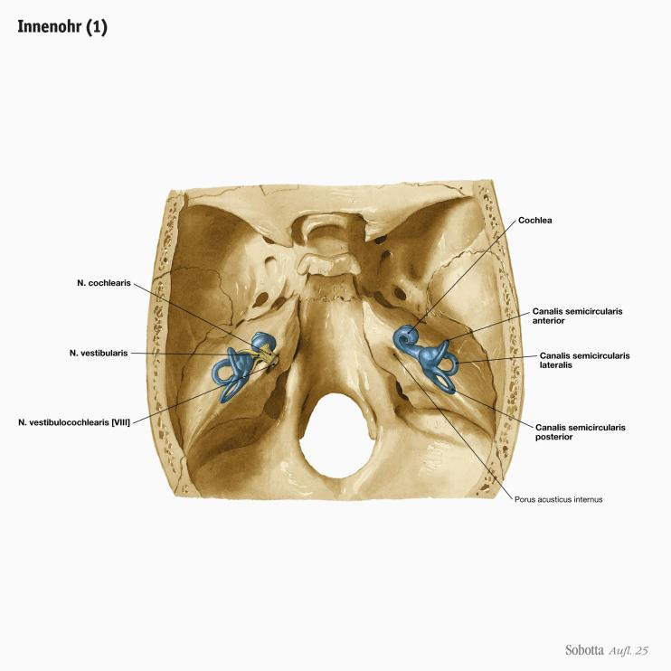
Innenohr (1)
Innenohr (2)
Knöchernes Labyrinth (1)
Knöchernes Labyrinth (2)
Das häutige Labyrinth
Kochleäres Labyrinth:
Schnecke (Cochlea)
Schnecke (Cochlea):
CORTI-Organ
Schnecke (Cochlea):
Prinzip der Schallleitung
Vestibuläres Labyrinth:
Utriculus und Sacculus
Vestibuläres Labyrinth:
Bogengänge
Blutversorgung des Innenohrs (1)
Blutversorgung des Innenohrs (2)
N. vestibulocochlearis (VIII):
Innervationsgebiet
N. vestibulocochlearis (VIII):
Verlauf
N. vestibulocochlearis (VIII):
Kerne
Hörbahn
Gleichgewichtsbahn
Kopf >
Leitungsbahnen
Gefäße des Kopfes
A. vertebralis
A. carotis communis (1)
A. carotis communis (2)
Sinus caroticus und Glomus caroticum
A. carotis externa:
Äste
A. facialis und Gesichtsäste der A. carotis interna
A. facialis
Klinik:
Anastomose der Stromgebiete von A. carotis interna und A. carotis externa
A. pharyngea ascendens (1)
A. pharyngea ascendens (2)
A. pharyngea ascendens (3)
A. occipitalis und A. auricularis posterior
A. auricularis posterior
A. temporalis superficialis
A. maxillaris (1)
A. maxillaris (2)
A. maxillaris (3)
Venen der tiefen Gesichtsregion (1)
Oberflächliche Venen des Gesichts
Venen der tiefen Gesichtsregion (2)
Lymphknoten des Kopfes
Kopf >
Zentrales Nervensystem
Gliederung des ZNS
Gliederung des Hirnstamms
Größe des Gehirns und Gliederung des Großhirns
Topographische Gliederung des Großhirns
Funktionelle Gliederung des Großhirns
Klinik: Symptomatik bei lokalisierten Läsionen
Somatotope Gliederung der Motorik und Sensorik
Klinik: Schlaganfalldiagnostik
Die drei großen Hirnarterien
Versorgungsgebiete der Hirnarterien: Topographisch
Versorgungsgebiete der Hirnarterien: Funktionell
Klinik: Symptomatik bei Schlaganfall
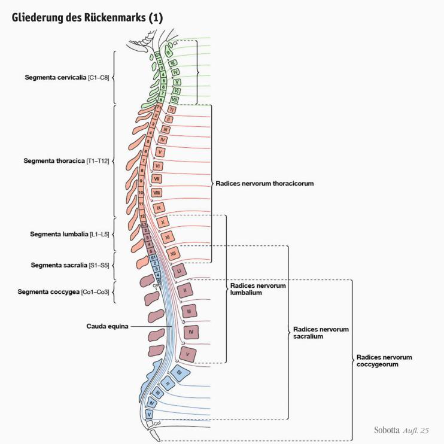
Gliederung des Rückenmarks (1)
Gliederung des Rückenmarks (2)
Kopf >
Situs des Gehirns
Situs von Gehirn und Rückenmark
Hirnhäute (Meningen) des Gehirns
Von der Dura gebildete Strukturen
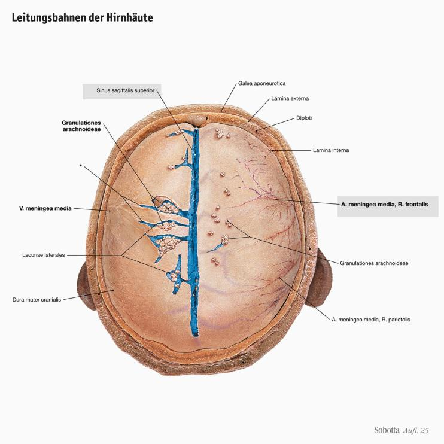
Leitungsbahnen der Hirnhäute
Venen von Meningen und Gehirn
Blutungen im Gehirn und in der Schädelhöhle
Meningen des Rückenmarks
Epiduralraum und Leitungsbahnen der Meningen des Rückenmarks
Durasack und Epiduralraum
Hirnnerven >
Übersicht
Die 12 Hirnnerven (Nn. craniales)
Hirnnerven:
Aus- und Eintrittsstellen aus dem Gehirn
Hirnnerven:
Verlauf im Subarachnoidalraum
Hirnnerven:
Aus- und Eintrittsstellen aus dem Schädel (1)
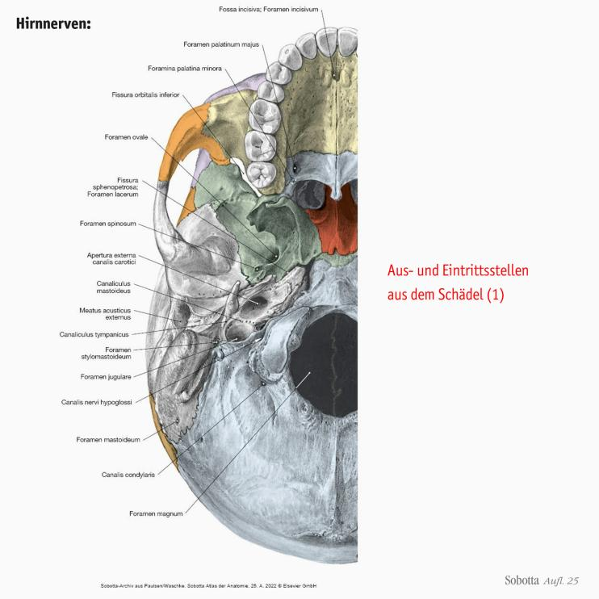
Hirnnerven:
Aus- und Eintrittsstellen aus dem Schädel (2)
Hirnnerven:
Faserqualitäten
Hirnnervenkerne (1)
Hirnnervenkerne (2)
Hirnnervenkerne (3)
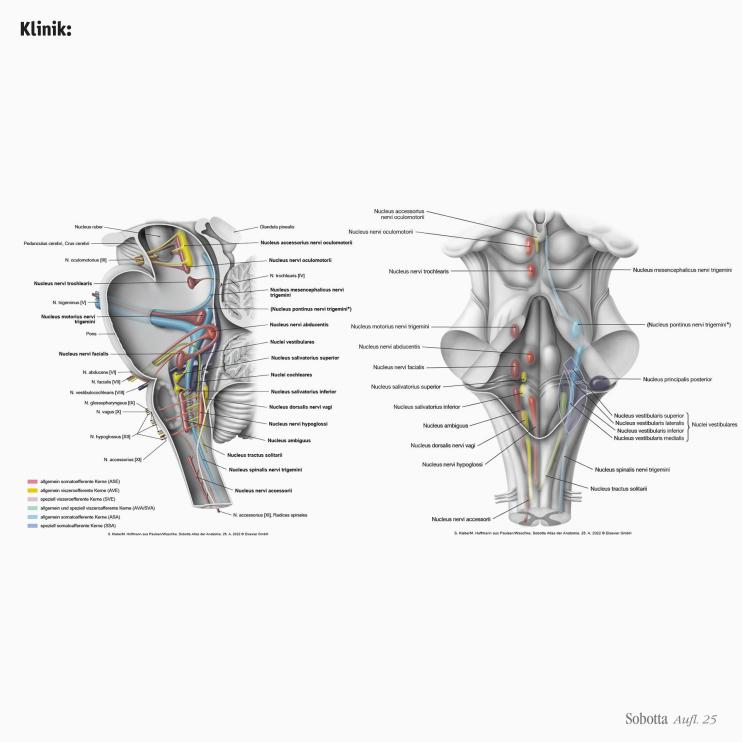
Klinik:
Läsion der Hirnnervenkerne (= periphere Läsion!)
Klinik:
zentrale vs. periphere Läsion der Hirnnerven
Hirnnerven >
Hirnnerven: 3,4,6
N. oculomotorius (III), N. trochlearis (IV), N. abducens (VI)
III, IV, VI:
N. oculomotorius (III):
Kerne und Faserqualitäten (1)
N. oculomotorius (III):
Kerne und Faserqualitäten (2)
N. oculomotorius (III):
Innervationsgebiet
Klinik:
N. oculomotorius (III): Läsion im Kerngebiet
N. oculomotorius (III):
Verlauf und Äste
N. trochlearis (IV) und N. abducens (VI):
Kerne und Faserqualitäten
Klinik:
N. trochlearis (IV) und N. abducens (VI): Läsion im Kerngebiet
N. trochlearis (IV) und N. abducens (VI):
Verlauf
N. oculomotorius (III), N. trochlearis (IV) und N. abducens (VI):
Verlauf (1)
N. oculomotorius (III), N. trochlearis (IV) und N. abducens (VI):
Verlauf (2)
N. oculomotorius (III), N. trochlearis (IV) und N. abducens (VI):
Verlauf (3)
N. oculomotorius (III), N. trochlearis (IV) und N. abducens (VI):
Verlauf (4)
N. oculomotorius (III), N. trochlearis (IV) und N. abducens (VI):
Verlauf (5)
Klinik:
N. oculomotorius (III): Läsion im Verlauf (1)
Klinik:
N. oculomotorius (III): Läsion im Verlauf (2)
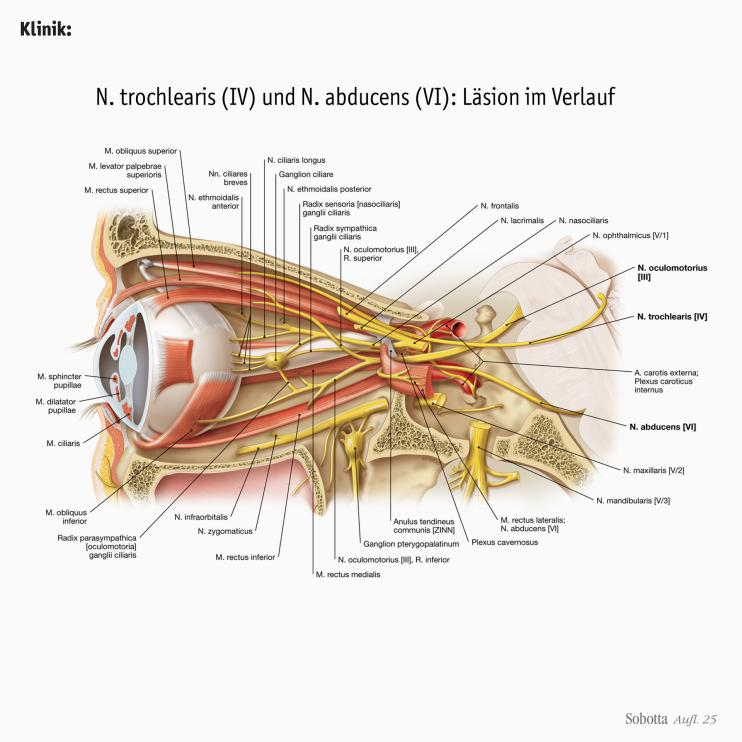
Klinik:
N. trochlearis (IV) und N. abducens (VI): Läsion im Verlauf
Hirnnerven >
Hirnnerv: 5
N. trigeminus (V)
N. trigeminus (V):
Kerne und Faserqualitäten (1)
N. trigeminus (V):
Kerne und Faserqualitäten (2)
Klinik:
N. trigeminus (V): Läsion im Kerngebiet
N. trigeminus (V):
somatotope Gliederung des Ncl. spinalis n. trigemini
N. trigeminus (V):
Hauptstämme
N. trigeminus (V):
Hauptstämme: Austritt aus dem Schädel
N. trigeminus (V):
Verlauf
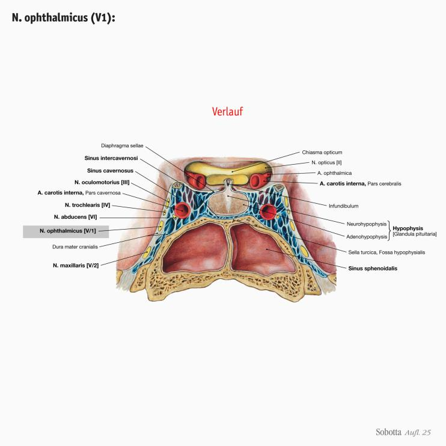
N. ophthalmicus (V1):
Verlauf
N. ophthalmicus (V1):
Verlauf und Äste (1)
N. ophthalmicus (V1):
Verlauf und Äste (2)
N. ophthalmicus (V1):
Äste
N. ophthalmicus (V1):
Sensorische Innervation des Gesichts
N. maxillaris (V2):
Verlauf
N. maxillaris (V2):
Äste
N. maxillaris (V2):
Sensorische Innervation des Gesichts
N. mandibularis (V3):
Verlauf
N. mandibularis (V3):
Äste (1)
N. mandibularis (V3):
Äste (2)
N. mandibularis (V3):
Sensorische Innervation des Gesichts
N. mandibularis (V3):
Äste (Rr. ganglionares)
N. mandibularis (V3):
N. lingualis und Chorda tympani aus VII (1)
N. mandibularis (V3):
N. lingualis und Chorda tympani aus VII (2)
Klinik:
N. trigeminus (V): Läsion im Verlauf
Hirnnerven >
Hirnnerv: 7
N. facialis (VII)
N. facialis (VII):
Kerne und Faserqualitäten
N. facialis (VII):
Innervationsgebiet
Klinik:
N. facialis (VII): Läsion im Kerngebiet
Klinik:
Periphere Fazialis-Parese
Klinik:
Zentrale Fazialis-Parese (besser: faziale Parese)
N. facialis (VII):
Verlauf (1)
N. facialis (VII):
Verlauf (2)
N. facialis (VII):
Verlauf (3)
N. facialis (VII):
Äste
N. facialis (VII):
Astabfolge (1)
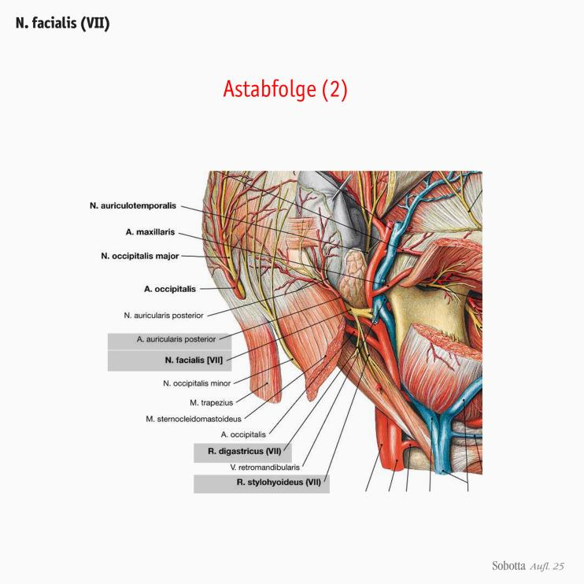
N. facialis (VII):
Astabfolge (2)
N. facialis (VII):
Astabfolge (3)
Klinik:
N. facialis (VII): bei Läsion im Verlauf
Verlauf der Chorda tympani (1)
Verlauf der Chorda tympani (2)
Verlauf der Chorda tympani (3)
Verlauf des N. petrosus major:
präganglionäre parasympathische Fasern
Hirnnerven >
Hirnnerv: 9
N. glossopharyngeus (IX)
N. glossopharyngeus (IX):
Kerne und Faserqualitäten
N. glossopharyngeus (IX):
Innervationsgebiet
Klinik:
N. glossopharyngeus (IX): Läsion im Kerngebiet
N. glossopharyngeus (IX):
Verlauf
N. glossopharyngeus (IX):
Äste
Verlauf des N. tympanicus und
N. petrosus minor (1): präganglionäre parasympathische Fasern
Verlauf des N. tympanicus und
N. petrosus minor (2): präganglionäre parasympathische Fasern
Klinik:
N. glossopharyngeus (IX): bei Läsion im Verlauf
Hirnnerven >
Hirnnerv: 10
N. vagus (X)
N. vagus (X):
Kerne und Faserqualitäten
N. vagus (X):
Innervationsgebiet
Klinik:
N. vagus (X): Läsion im Kerngebiet
N. vagus (X):
Verlauf an Kopf und Hals
N. vagus (X):
Äste
Klinik:
N. vagus (X): Läsion im peripheren Verlauf
Hirnnerven >
Hirnnerv: 11
N. accessorius (XI)
N. accessorius (XI):
Kerne und Faserqualitäten
N. accessorius (XI):
Innervationsgebiet
N. accessorius (XI):
Läsion im Kerngebiet
N. accessorius (XI):
Äste und Verlauf
N. accessorius (XI):
Verlauf
Klinik:
N. accessorius (XI): Läsion im peripheren Verlauf
Hirnnerven >
Hirnnerv: 12
N. hypoglossus (XII)
N. hypoglossus (XII):
Kerne, Faserqualitäten und Innervationsgebiet
N. hypoglossus (XII):
Innervationsgebiet
Klinik: N. hypoglossus (XII):
Läsion im Kerngebiet
N. hypoglossus (XII):
Verlauf und Äste
N. hypoglossus (XII):
Verlauf
Klinik:
N. hypoglossus (XII): Läsion im Verlauf
Hirnnerven >
Parasympathische Kopfganglien
Die 4 parasympathischen Kopfganglien
Die 4 parasympathischen Kopfganglien (2)
Ganglion ciliare (1)
Ganglion ciliare (2)
Ganglion pterygopalatinum
Ganglion pterygopalatinum:
Innervationsgebiet und Äste
Ganglion oticum (1)
Ganglion oticum (2)
Ganglion submandibulare (1)
Ganglion submandibulare (2)
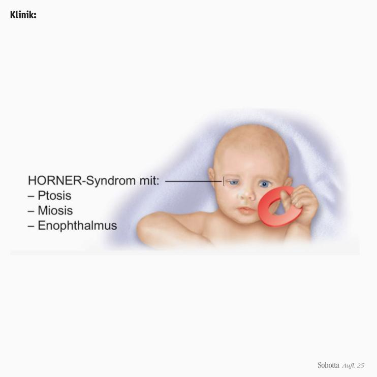
Klinik:
HORNER-Syndrom bei Läsion der Kopfganglien
Gesichtsregion >
Gesichtsregion
Oberflächliche und tiefe Gesichtsregion
Oberflächliche Gesichtsregion (2)
Oberflächliche Gesichtsregion (3)
Tiefe Gesichtsregion (1)
Tiefe Gesichtsregion (2)
Tiefe Gesichtsregion: Flügelgaumengrube (Fossa pterygopalatina)
Flügelgaumengrube
(Fossa pterygopalatina): Arterien
Flügelgaumengrube
(Fossa pterygopalatina): Venen
Flügelgaumengrube
(Fossa pterygopalatina): Nerven
Durchtrittsöffnungen des Schädels (1)
Durchtrittsöffnungen des Schädels (2)
Öffnungen der Orbita
Öffnungen der Fossa pterygopalatina
F I N E